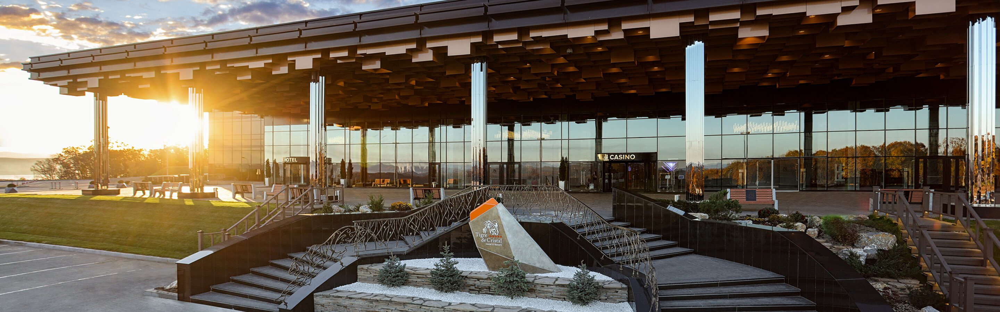

Сборы и дорога
Выезд из Триозёрья без гонки. До Артёма несколько часов. В город можно заехать оставить вещи: зона находится севернее Владивостока, у бухты Муравьиной.
День 10 из 10
Последний вечер маршрута. Игорная зона «Приморье» на бухте Муравьиной: стеклянный корпус у мыса Черепаха, отель и рестораны на берегу.
Выезд из Триозёрья без гонки. До Артёма несколько часов. В город можно заехать оставить вещи: зона находится севернее Владивостока, у бухты Муравьиной.
Tigre de Cristal принял первых гостей 8 октября 2015 года. Адрес: Артёмовский городской округ, территория бухты Муравьиная, дом 73, около двадцати минут от аэропорта Кневичи. Вход гостям старше 18 лет, при себе паспорт. Кроме игрового зала здесь пятизвёздочный отель, рестораны и набережная. Приезжайте к свету, чтобы увидеть бухту и корпус.
Это закрытие десяти дней. Обратный трансфер в город договаривайте заранее: ночью машину от мыса Черепаха ждут дольше, чем кажется из зала.
Игорная зона «Приморье» — одна из территорий, где казино разрешены федеральным законом № 244-ФЗ от 29 декабря 2006 года. Зоны собрали, чтобы вывести игру из городов и оставить её в нескольких точках страны. Дальневосточная точка стоит в Артёмовском городском округе, на берегу бухты Муравьиная, у мыса Черепаха. Бухта — северное окончание Уссурийского залива, мелкая и зимой замерзающая.
Tigre de Cristal, «Хрустальный тигр», принял первых гостей 8 октября 2015 года и стал первым действующим казино зоны. Официальная церемония прошла 11 ноября. Рядом позже появились и другие операторы. Для путеводителя важен не стол, а жест: государство решило, что туризм Приморья может включать курорт такого типа, и поставило его не в центре Владивостока, а на отдельном берегу, с отелями и собственной дорогой.
Вечер устроен просто. Приезжаете засветло, смотрите на залив и корпус, ужинаете в комплексе, заходите в зал, если хотите и если вам есть восемнадцать. Никаких систем игры этот маршрут не описывает и не рекомендует. Казино в десятый день — архитектурный и экономический финал, рядом с которым легко потерять меру. Держите обратную дорогу и лимит до того, как откроется дверь зала.
На этом линия замыкается. Десять дней назад вы въезжали на остров по мосту, построенному к международному саммиту. Заканчиваете на другом берегу того же края, в зоне, которую федеральный закон вырезал под отдельный вид туризма. Между этими точками были пост 1860 года, крепость, заповедное море, граница и леопард. Маршрут про то, как одна страна пользуется своим тихоокеанским краем: защищает, изучает, показывает и продаёт отдых.
Маршрут закончен. Карта всех десяти дней — на главной странице.
